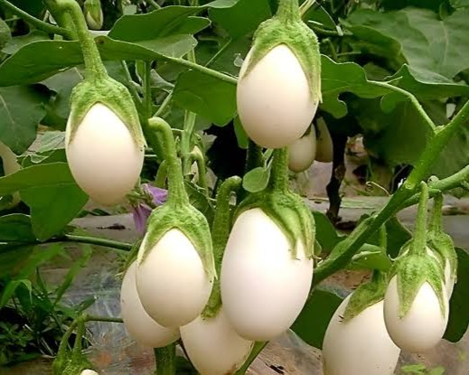
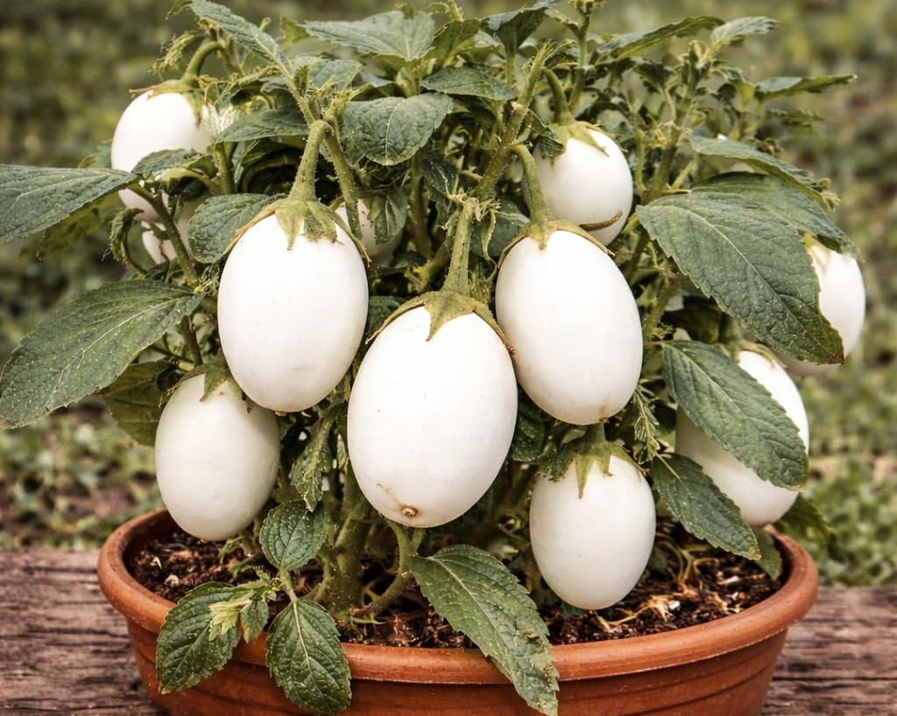

Talvolta la natura vuole testare la nostra attenzione e ci ritroviamo davanti un albero di uova... In realtà si tratta della Solanum Ovigerum, una pianta dai frutti che somigliano a uova di gallina ma che sono in realà parenti delle melanzane! Questa pianta appartiene appunto alla famiglia delle Solanacee, è originaria dell'Asia e dell'Africa ed è commestibile anche se viene spesso usata come decorazione proprio per lo scherzetto che gioca alle nostre menti. I frutti in realtà risultano maturi quando assumono una colorazione gialla, e come le loro cugine melanzane vanno cotti prima di mangiarli.

